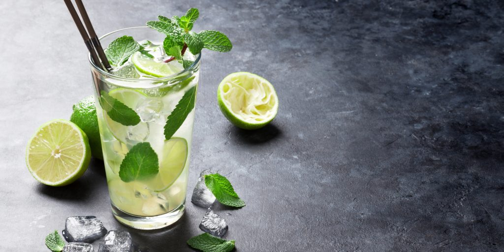
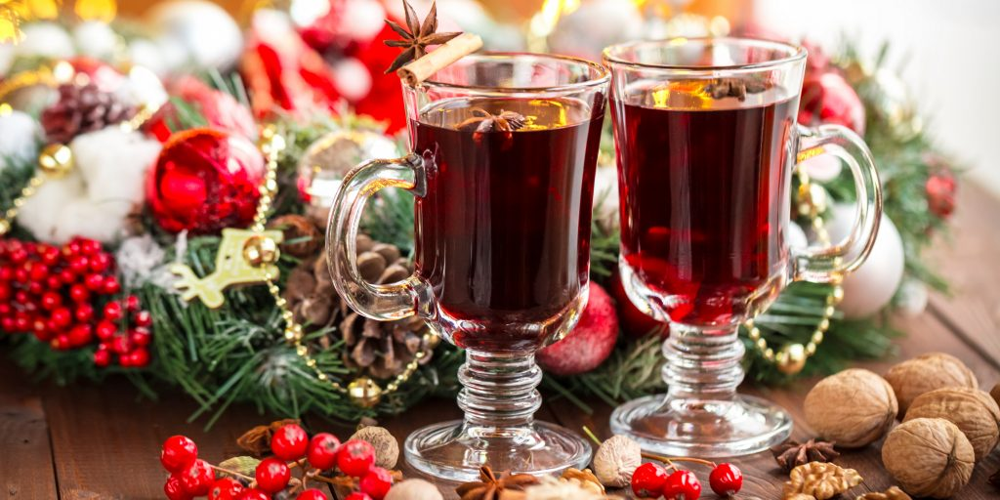

Напитки:
| Игредиенты: | Лайм Листья мяты Сахар, желательно коричневый Лед Сок лимона Содовая | ½ шт. 10 шт.2 ч.л. 200г 30 мл 100 мл |
Приготовление мохито:
Разрежьте лайм на 4 дольки. Положите листья мяты и 2 дольки лайма в стакан из толстого стекла. Подавите мяту и лайм мадлером или ложкой, чтобы они пустили сок. Добавьте ещё 1 дольку лайма и сахар, а после снова подавите.
Заполните стакан льдом почти до самого верха. Налейте сок лимона и добавьте содовую. Аккуратно размешайте коктейльной ложкой и добавьте больше сахара, если это необходимо. Украсьте готовый коктейль долькой лайма и листиками мяты.
| Игредиенты: | Красный виноградный сок Клюквенный сокВода Коробочки кардамона Бутончики гвоздики Звёздочки бадьянаПалочки корицыКружочки апельсинаМолотый мускатный орехСахар/мед | 500 мл 250 мл200 мл 3 шт. 11 шт. 3 шт.2 шт. 3 шт.щепотка по вкусу |
Приготовление глинтвейна:
Налейте сок и воду в небольшую кастрюлю. Из одной коробочки кардамона извлеките семена, две другие слегка раздавите. Добавьте в ёмкость кардамон, гвоздику, бадьян, корицу, апельсин и мускатный орех. При желании всыпьте сахар. Мёд добавляйте в готовый напиток или непосредственно при подаче.
Хорошенько прогрейте напиток на слабом огне, не доводя до кипения. Дайте глинтвейну настояться под крышкой минут 30 или больше. Чтобы он не остыл, кастрюлю можно укутать.
Процедите готовый напиток через сито и разлейте горячим по бокалам.
 НА ГЛАВНУЮ